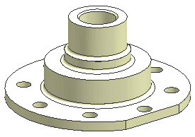

Open drf6_project_dwg and start the Drafting application.

Because there are no drawings in this part and the Automatically Start Insert Sheet Command preference is set, the Sheet dialog box appears.
Create the drawing sheet with these values:
Use an A3 standard sheet size.
Have all the views appear full scale.
Use 3rd angle projection.
Name this drawing sheet Sheet 1 with revision A.
Make sure Automatically Start View Creation is on and that the Base View Command is selected.
When the drawing sheet is created, the Base View dialog box automatically appears.